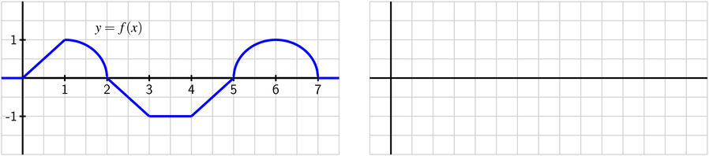

Section5.2The Second Fundamental Theorem of Calculus¶ permalink
{In this section, we strive to understand the ideas generated by the following important questions:
How does the integral function \(A(x) = \int_1^x f(t) \, dt\) define an antiderivative of \(f\)?
What is the statement of the Second Fundamental Theorem of Calculus?
How do the First and Second Fundamental Theorems of Calculus enable us to formally see how differentiation and integration are almost inverse processes?
}
Subsection5.2.1Introduction
In Section 4.4, we learned the Fundamental Theorem of Calculus (FTC), which from here forward will be referred to as the First Fundamental Theorem of Calculus\knownindex{\lt main>Fundamental Theorem of Calculus\lt /main>\lt sub>First\lt /sub>}, as in this section we develop a corresponding result that follows it. In particular, recall that the First FTC tells us that if \(f\) is a continuous function on \([a,b]\) and \(F\) is any antiderivative of \(f\) (that is, \(F' = f\)), then
\[
\int_a^b f(x) \, dx = F(b) - F(a).
\]
We have typically used this result in two settings: (1) where \(f\) is a function whose graph we know and for which we can compute the exact area bounded by \(f\) on a certain interval \([a,b]\), we can compute the change in an antiderivative \(F\) over the interval; and (2) where \(f\) is a function for which it is easy to determine an algebraic formula for an antiderivative, we may evaluate the integral exactly and hence determine the net-signed area bounded by the function on the interval. For the former, see Preview Activity or Activity 5.1.2. For the latter, we can easily evaluate exactly integrals such as
\[
\int_1^4 x^2 \, dx,
\]
since we know that the function \(F(x) = \frac{1}{3}x^3\) is an antiderivative of \(f(x) = x^2\). Thus,
Here we see that the First FTC can be viewed from at least two perspectives: first, as a tool to find the difference \(F(b) - F(a)\) for an antiderivative \(F\) of the integrand \(f\). In this situation, we need to be able to determine the value of the integral \(\int_a^b f(x) \, dx\) exactly, perhaps through known geometric formulas for area. It is possible that we may not have a formula for \(F\) itself. From a second perspective, the First FTC provides a way to find the exact value of a definite integral, and hence a certain net-signed area exactly, by finding an antiderivative of the integrand and evaluating its total change over the interval. In this latter case, we need to know a formula for the antiderivative \(F\), as this enables us to compute net-signed areas exactly through definite integrals, as demonstrated in Figure 5.2.1.
Figure5.2.1At left, the graph of \(f(x) = x^2\) on the interval \([1,4]\) and the area it bounds. At right, the antiderivative function \(F(x) = \frac{1}{3}x^3\), whose total change on \([1,4]\) is the value of the definite integral at left.
We recall further that the value of a definite integral may have additional meaning depending on context: change in position when the integrand is a velocity function, total pollutant leaked from a tank when the integrand is the rate at which pollution is leaking, or other total changes that correspond to a given rate function that is the integrand. In addition, the value of the definite integral is always connected to the average value of a continuous function on a given interval: \(f_{\mbox{\tiny{AVG}} [a,b]} = \frac{1}{b-a} \int_a^b f(x) \, dx\).
Next, remember that in the last part of Section 5.1, we studied integral functions of the form \(A(x) = \int_c^x f(t) \, dt\). Figure 5.1.6 is a particularly important image to keep in mind as we work with integral functions, and the corresponding java applet at \href{http://gvsu.edu/s/cz}{http://gvsu.edu/s/cz} is likewise foundational to our understanding of the function \(A\). In what follows, we use the First FTC to gain additional understanding of the function \(A(x) = \int_c^x f(t) \, dt\), where the integrand \(f\) is given (either through a graph or a formula), and \(c\) is a constant. In particular, we investigate further the special nature of the relationship between the functions \(A\) and \(f\).
Preview Activity
Consider the function \(A\) defined by the rule
\[
A(x) = \int_1^x f(t) \, dt,
\]
where \(f(t) = 4-2t\).
Compute \(A(1)\) and \(A(2)\) exactly.
Use the First Fundamental Theorem of Calculus to find an equivalent formula for \(A(x)\) that does not involve integrals. That is, use the first FTC to evaluate \(\int_1^x (4-2t) \, dt\).
Observe that \(f\) is a linear function; what kind of function is \(A\)?
Using the formula you found in (b) that does not involve integrals, compute \(A'(x)\).
While we have defined \(f\) by the rule \(f(t) = 4-2t\), it is equivalent to say that \(f\) is given by the rule \(f(x) = 4 - 2x\). What do you observe about the relationship between \(A\) and \(f\)?
Subsection5.2.2The Second Fundamental Theorem of Calculus
\knownindex{\lt main>Fundamental Theorem of Calculus\lt /main>\lt sub>Second\lt /sub>}
The result of Preview Activity is not particular to the function \(f(t) = 4-2t\), nor to the choice of “\(1\)” as the lower bound in the integral that defines the function \(A\). For instance, if we let \(f(t) = \cos(t) - t\) and set \(A(x) = \int_2^x f(t) \, dt\), then we can determine a formula for \(A\) without integrals by the First FTC. Specifically,
Differentiating \(A(x)\), since \((\sin(2) - 2)\) is constant, it follows that
\[
A'(x) = \cos(x) - x,
\]
and thus we see that \(A'(x) = f(x)\). This tells us that for this particular choice of \(f\), \(A\) is an antiderivative of \(f\). More specifically, since \(A(2) = \int_2^2 f(t) \, dt = 0\), \(A\) is the only antiderivative of \(f\) for which \(A(2) = 0\).
In general, if \(f\) is any continuous function, and we define the function \(A\) by the rule
\[
A(x) = \int_c^x f(t) \, dt,
\]
where \(c\) is an arbitrary constant, then we can show that \(A\) is an antiderivative of \(f\). To see why, let's demonstrate that \(A'(x) = f(x)\) by using the limit definition of the derivative. Doing so, we observe that
where Equation (5.2.0) in the preceding chain follows from the fact that \(\int_c^x f(t) \,dt + \int_x^{x+h} f(t) \, dt = \int_c^{x+h} f(t) \, dt\). Now, observe that for small values of \(h\),
Hence, \(A\) is indeed an antiderivative of \(f\). In addition, \(A(c) = \int_c^c f(t) \, dt = 0.\) The preceding argument demonstrates the truth of the Second Fundamental Theorem of Calculus, which we state as follows.
{
Theorem. (Second FTC) If \(f\) is a continuous function and \(c\) is any constant, then \(f\) has a unique antiderivative \(A\) that satisfies \(A(c) = 0\), and that antiderivative is given by the rule \(A(x) = \int_c^x f(t) \, dt\).
}
Suppose that \(f\) is the function given in Figure 5.2.3 and that \(f\) is a piecewise function whose parts are either portions of lines or portions of circles, as pictured.
Figure5.2.3At left, the graph of \(y = f(x)\). At right, axes for sketching \(y = A(x)\).
In addition, let \(A\) be the function defined by the rule \(A(x) = \int_2^x f(t) \, dt\).
What does the Second FTC tell us about the relationship between \(A\) and \(f\)?
Compute \(A(1)\) and \(A(3)\) exactly.
Sketch a precise graph of \(y = A(x)\) on the axes at right that accurately reflects where \(A\) is increasing and decreasing, where \(A\) is concave up and concave down, and the exact values of \(A\) at \(x = 0, 1, \ldots, 7\).
How is \(A\) similar to, but different from, the function \(F\) that you found in Activity 5.1.2?
With as little additional work as possible, sketch precise graphs of the functions \(B(x) = \int_3^x f(t) \, dt\) and \(C(x) = \int_1^x f(t) \, dt\). Justify your results with at least one sentence of explanation.
Review the statement of the Second FTC above; what does that theorem tell you about \(A'\)?
Note that \(A(1)= \int_2^1 f(t) \, dt\); don't forget that \(\int_2^1 f(t) \, dt = -\int_1^2 f(t) \, dt\).
Don't miss our key conclusion from (a), which enables us to gain information from the derivative of \(A\) about where \(A\) is increasing, decreasing, concave up, and concave down.
Compare the values of \(A(1)\) and \(F(1)\); note that \(F\) could be equivalently defined by the rule \(F(x) = \int_0^x f(t) \, dt - 1\).
What does the Second FTC tell us about the relationship between \(B\) and \(f\)? Between \(C\) and \(f\)? Note, too, that we can write \(B(x) = F(x) - F(3)\), where \(F\) is any antiderivative of \(f\).
Since \(A(1)= \int_2^1 f(t) \, dt = -\int_1^2 f(t) \, dt\), it follows \(A(1) = -\frac{\pi}{4}\).
Note that \(A\) is increasing wherever \(f\) is positive, and \(A\) is CCU wherever \(f\) is increasing. Similar conclusions follow for \(A\) being decreasing and/or concave down. Moreover, \(A(2) = 0\), \(A(3) = -0.5\), \(A(4) = -1.5\), \(A(5) = -2\), \(A(6) = -2 + \frac{\pi}{4}\), and \(A(7) = -2 + \frac{\pi}{2}\).
In our current example, \(A\) is an antiderivative of \(f\) that satisfies \(A(0) = -\frac{1}{2} - \frac{\pi}{4}\). Our earlier work with \(F\) showed that \(F\) is an antiderivative of \(F\) that satisfied \(F(0) = -1\). Since \(F\) and \(A\) are both antiderivatives of \(f\), they differ by a constant, and that constant is \(-1 - (-\frac{1}{2} - \frac{\pi}{4}) = \frac{\pi}{4} - \frac{1}{2}\).
The Second FTC tells us that \(B' = f\) and \(C' = f\). Thus, \(B\) and \(C\) are each antiderivatives of \(f\), have the same shape as \(A\) and \(F\), and each differ from \(A\) by just a constant. Observing that \(B(3) = 0\) and \(C(1) = 0\) enables us to easily sketch these shifted versions of \(A\).
Subsection5.2.3Understanding Integral Functions
The Second FTC provides us with a means to construct an antiderivative of any continuous function. In particular, if we are given a continuous function \(g\) and wish to find an antiderivative of \(G\), we can now say that
\[
G(x) = \int_c^x g(t) \, dt
\]
provides the rule for such an antiderivative, and moreover that \(G(c) = 0\). Note especially that we know that \(G'(x) = g(x)\). We sometimes want to write this relationship between \(G\) and \(g\) from a different notational perspective. In particular, observe that
This result can be particularly useful when we're given an integral function such as \(G\) and wish to understand properties of its graph by recognizing that \(G'(x) = g(x)\), while not necessarily being able to exactly evaluate the definite integral \(\int_c^x g(t) \, dt\). To see how this is the case, we consider the following example.
Solution.
\(E\) is closely related to the well known error function\knownindex{\lt main>error functin\lt /main>} 1 The error function is defined by the rule \(\mbox{erf} (x) = \frac{2}{\sqrt{\pi}} \int_0^x e^{-t^2} \,dt\) and has the key property that \(0 \le \mbox{erf} (x) \lt 1\) for all \(x \ge 0\) and moreover that \(\ds \lim_{x \to \infty} \mbox{erf} (x) = 1\)., a function that is particularly important in probability and statistics. It turns out that the function \(e^{-t^2}\) does not have an elementary antiderivative that we can express without integrals. That is, whereas a function such as \(f(t) = 4-2t\) has elementary antiderivative \(F(t) = 4t - t^2\), we are unable to find a simple formula for an antiderivative of \(e^{-t^2}\) that does not involve a definite integral. We will learn more about finding (complicated) algebraic formulas for antiderivatives without definite integrals in the chapter on infinite series.
Returning our attention to the function \(E\), while we cannot evaluate \(E\) exactly for any value other than \(x = 0\),
we still can gain a tremendous amount of information about the function \(E\). To begin, applying the rule in Equation (5.2.1) to \(E\), it follows that
so we know a formula for the derivative of \(E\). Moreover, we know that \(E(0) = 0\). This information is precisely the type we were given in problems such as the one in Activity 3.1.6 and others in Section 3.1, where we were given information about the derivative of a function, but lacked a formula for the function itself.
Here, using the first and second derivatives of \(E\), along with the fact that \(E(0) = 0\), we can determine more information about the behavior of \(E\). First, with \(E'(x) = e^{-x^2}\), we note that for all real numbers \(x\), \(e^{-x^2} > 0\), and thus \(E'(x) > 0\) for all \(x\). Thus \(E\) is an always increasing function. Further, we note that as \(x \to \infty\), \(E'(x) = e^{-x^2} \to 0\), hence the slope of the function \(E\) tends to zero as \(x \to \infty\) (and similarly as \(x \to -\infty\)). Indeed, it turns out (due to some more sophisticated analysis) that \(E\) has horizontal asymptotes as \(x\) increases or decreases without bound.
In addition, we can observe that \(E''(x) = -2xe^{-x^2}\), and that \(E''(0) = 0\), while \(E''(x) \lt 0\) for \(x > 0\) and \(E''(x) > 0\) for \(x \lt 0\). This information tells us that \(E\) is concave up for \(x\lt 0\) and concave down for \(x > 0\) with a point of inflection at \(x = 0\).
The only thing we lack at this point is a sense of how big \(E\) can get as \(x\) increases. If we use a midpoint Riemann sum with 10 subintervals to estimate \(E(2)\), we see that \(E(2) \approx 0.8822\); a similar calculation to estimate \(E(3)\) shows little change (\(E(3) \approx 0.8862\)), so it appears that as \(x\) increases without bound, \(E\) approaches a value just larger than \(0.886\), which aligns with the fact that \(E\) has horizontal asymptotes. Putting all of this information together (and using the symmetry of \(f(t) = e^{-t^2}\)), we see the results shown in Figure 5.2.5.
Figure5.2.5At left, the graph of \(f(t) = e^{-t^2}\). At right, the integral function \(E(x) = \int_0^x e^{-t^2} dt\), which is the unique antiderivative of \(f\) that satisfies \(E(0) = 0\).
Again, \(E\) is the antiderivative of \(f(t) = e^{-t^2}\) that satisfies \(E(0) = 0\). Moreover, the values on the graph of \(y = E(x)\) represent the net-signed area of the region bounded by \(f(t) = e^{-t^2}\) from 0 up to \(x\). We see that the value of \(E\) increases rapidly near zero but then levels off as \(x\) increases since there is less and less additional accumulated area bounded by \(f(t) = e^{-t^2}\) as \(x\) increases.
Suppose that \(f(t) = \frac{t}{1+t^2}\) and \(F(x) = \int_0^x f(t) \, dt\).
Figure5.2.7Axes for plotting \(f\) and \(F\).
On the axes at left in Figure 5.2.7, plot a graph of \(f(t) = \frac{t}{1+t^2}\) on the interval \(-10 \le t \le 10\). Clearly label the vertical axes with appropriate scale.
What is the key relationship between \(F\) and \(f\), according to the Second FTC?
Use the first derivative test to determine the intervals on which \(F\) is increasing and decreasing.
Use the second derivative test to determine the intervals on which \(F\) is concave up and concave down. Note that \(f'(t)\) can be simplified to be written in the form \(f'(t) = \frac{1-t^2}{(1+t^2)^2}.\)
Using technology appropriately, estimate the values of \(F(5)\) and \(F(10)\) through appropriate Riemann sums.
Sketch an accurate graph of \(y = F(x)\) on the righthand axes provided, and clearly label the vertical axes with appropriate scale.
\(F\) is increasing wherever \(F'=f\) is positive, so for all \(x > 0\). Similarly, \(F\) is decreasing for \(x \lt 0\)
\(F\) is CCU wherever \(F' = f\) is increasing or wherever \(F'' = f'\) is positive. It is straightforward to show that \(f''\) is positive for \(-1 \lt x \lt 1\) and negative otherwise, thus \(F\) is CCU on \(-1 \lt x \lt 1\) and CCD for \(x \lt -1\) and \(x > 1\).
\(F(5) = \int_0^5 \frac{t}{1+t^2} \, dt \approx 2.35973\), using a midpoint Riemann sum with 10 subintervals. Similarly, \(F(10) = \int_0^{10} \frac{t}{1+t^2} \, dt \approx 2.35973\).
Recalling that \(F(0) = 0\) and using the values and information we've found in (b)-(e), we arrive at the graph at below right.
Subsection5.2.4Differentiating an Integral Function
We have seen that the Second FTC enables us to construct an antiderivative \(F\) of any continuous function \(f\) by defining \(F\) by the corresponding integral function \(F(x) = \int_c^x f(t) \, dt\). Said differently, if we have a function of the form \(F(x) = \int_c^x f(t) \, dt\), then we know that \(F'(x) = \frac{d}{dx} \left[\int_c^x f(t) \, dt \right] = f(x)\). This shows that integral functions, while perhaps having the most complicated formulas of any functions we have encountered, are nonetheless particularly simple to differentiate. For instance, if
\[
F(x) = \int_{\pi}^x \sin(t^2) \, dt,
\]
then by the Second FTC, we know immediately that
\[
F'(x) = \sin(x^2).
\]
Stating this result more generally for an arbitrary function \(f\), we know by the Second FTC that
In words, the last equation essentially says that “the derivative of the integral function whose integrand is \(f\), is \(f\).” In this sense, we see that if we first integrate the function \(f\) from \(t = a\) to \(t = x\), and then differentiate with respect to \(x\), these two processes “undo” one another.
Taking a different approach, say we begin with a function \(f(t)\) and differentiate with respect to \(t\). What happens if we follow this by integrating the result from \(t = a\) to \(t = x\)? That is, what can we say about the quantity
Here, we use the First FTC and note that \(f(t)\) is an antiderivative of \(\frac{d}{dt} \left[ f(t) \right].\) Applying this result and evaluating the antiderivative function, we see that
Thus, we see that if we apply the processes of first differentiating \(f\) and then integrating the result from \(a\) to \(x\), we return to the function \(f\), minus the constant value \(f(a)\). So in this situation, the two processes almost undo one another, up to the constant \(f(a)\).
The observations made in the preceding two paragraphs demonstrate that differentiating and integrating (where we integrate from a constant up to a variable) are almost inverse processes. In one sense, this should not be surprising: integrating involves antidifferentiating, which reverses the process of differentiating. On the other hand, we see that there is some subtlety involved, as integrating the derivative of a function does not quite produce the function itself. This is connected to a key fact we observed in Section 5.1, which is that any function has an entire family of antiderivatives, and any two of those antiderivatives differ only by a constant.
\(\ds \frac{d}{dx} \left[ \int_4^{x^3} \sin(t^2) \, dt \right]\) (Hint: Let \(F(x) = \int_4^x \sin(t^2) \, dt\) and observe that this problem is asking you to evaluate \(\frac{d}{dx} \left[F(x^3)] \right]\).
\item For a continuous function \(f\), the integral function \(A(x) = \int_1^x f(t) \, dt\) defines an antiderivative of \(f\).
\item The Second Fundamental Theorem of Calculus is the formal, more general statement of the preceding fact: if \(f\) is a continuous function and \(c\) is any constant, then \(A(x) = \int_c^x f(t) \, dt\) is the unique antiderivative of \(f\) that satisfies \(A(c) = 0\).
\item Together, the First and Second FTC enable us to formally see how differentiation and integration are almost inverse processes through the observations that
\begin{exercises}
\item Let \(g\) be the function pictured below at left, and let \(F\) be defined by \(F(x) = \int_{2}^x g(t) \, dt.\) Assume that the shaded areas have values \(A_1 = 4.3\), \(A_2 = 12.7\), \(A_3 = 0.4\), and \(A_4 = 1.8\). Assume further that the portion of \(A_2\) that lies between \(x = 0.5\) and \(x = 2\) is \(5.4\).
Sketch a carefully labeled graph of \(F\) on the axes provided, and include a written analysis of how you know where \(F\) is zero, increasing, decreasing, CCU, and CCD.
Figure5.2.9At left, the graph of \(g\). At right, axes for plotting \(F\).
\item The tide removes sand from the beach at a small ocean park at a rate modeled by the function
A pumping station adds sand to the beach at rate modeled by the function
\[
S(t) = \frac{15t}{1+3t}
\]
Both \(R(t)\) and \(S(t)\) are measured in cubic yards of sand per hour, \(t\) is measured in hours, and the valid times are \(0 \le t \le 6\). At time \(t = 0\), the beach holds 2500 cubic yards of sand.
What definite integral measures how much sand the tide will remove during the time period \(0 \le t \le 6\)? Why?
Write an expression for \(Y(x)\), the total number of cubic yards of sand on the beach at time \(x\). Carefully explain your thinking and reasoning.
At what instantaneous rate is the total number of cubic yards of sand on the beach at time \(t = 4\) changing?
Over the time interval \(0 \le t \le 6\), at what time \(t\) is the amount of sand on the beach least? What is this minimum value? Explain and justify your answers fully.
\item When an aircraft attempts to climb as rapidly as
possible, its climb rate (in feet per minute) decreases as altitude
increases, because the air is less dense at higher altitudes.
Given below is a table showing performance data for a certain
single engine aircraft, giving its climb rate at various altitudes, where \(c(h)\) denotes the climb rate of the airplane at an altitude \(h\).
\begingroup
\footnotesize
Let a new function \(m\), that also depends on \(h\), (say \(y = m(h)\)) measure
the number of minutes required for a plane at altitude \(h\) to climb the
next foot of altitude.
Determine a similar table of values for \(m(h)\) and explain how it is related to the table above. Be sure to discuss the units on \(m\).
Give a careful interpretation of a function whose derivative
is \(m(h)\). Describe what the input is and what the output is. Also,
explain in plain English what the function tells us.
Determine a definite integral whose value tells us exactly the number of minutes required for the airplane to ascend to
10,000 feet of altitude. Clearly explain why the value of this integral has the required meaning.
Determine a formula for a function \(M(h)\) whose value tells us the exact number of minutes required for the airplane to ascend to \(h\) feet of altitude.
Estimate the values of \(M(6000)\) and \(M(10000)\) as accurately as you can. Include units on your results.